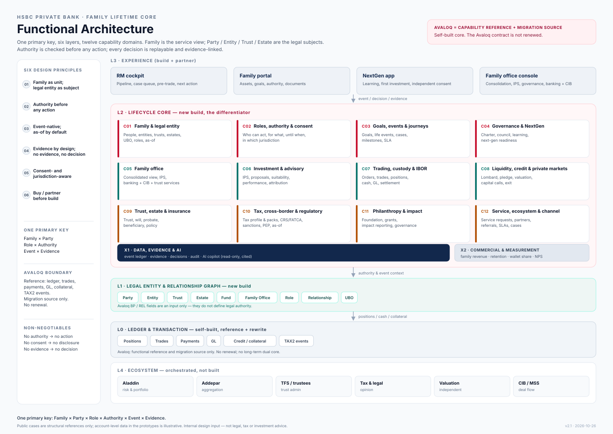

从上到下是“体验 → 生命周期 → 法律主体 → 账本”。左右不是技术分层，而是责任边界：谁能看见、谁能操作、谁留下证据。
Avaloq 的强项在 L0（交易、账本、支付、抵押、TAX2 事件）与单据/任务。L2 的家族、授权、事件、证据不是它的对象模型。我们参考并迁移，不续订。
不是 client_id，而是 Family × Party × Role × Authority × Event × Evidence。任何一个时点都能回答“谁有权、依据什么、到何时、在哪个辖区”。